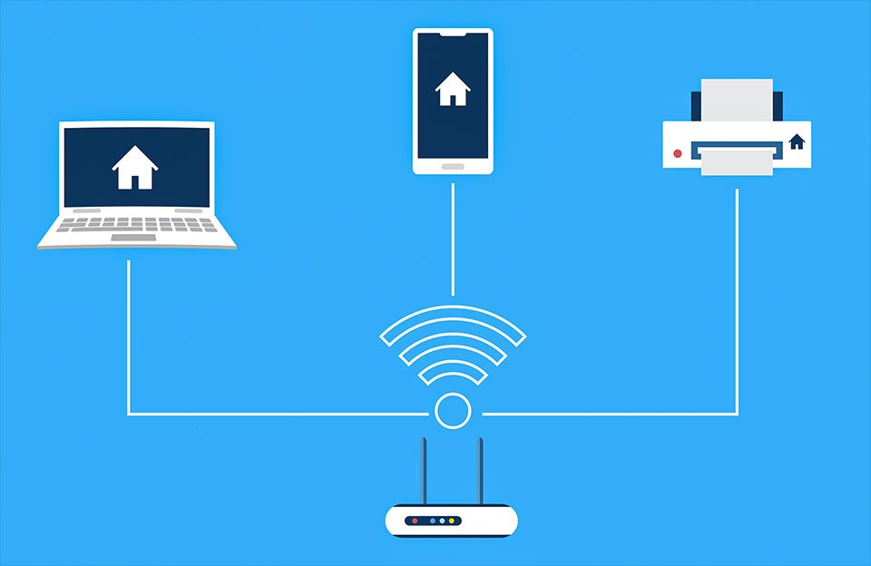

أساسيات التوجيه
مقدمة في التوجيه
التوجيه (Routing) هو عملية تحديد المسار الأفضل لنقل البيانات من المصدر إلى الوجهة عبر شبكة من الشبكات المترابطة. يعتبر التوجيه من العمليات الأساسية التي تمكن الاتصال بين الشبكات المختلفة، وبدونه لا يمكن للبيانات أن تنتقل بين الشبكات المنفصلة.
يتم تنفيذ عملية التوجيه بواسطة أجهزة متخصصة تسمى الموجهات (Routers)، والتي تعمل في طبقة الشبكة (الطبقة الثالثة) من نموذج OSI. تستخدم الموجهات معلومات العنونة المنطقية (عناوين IP) لاتخاذ قرارات التوجيه.
رسم توضيحي لعملية التوجيه وكيفية انتقال البيانات بين الشبكات المختلفة عبر الموجهات.
كيف يعمل التوجيه؟
عندما تريد إرسال بيانات من جهاز في شبكة إلى جهاز في شبكة أخرى، تمر هذه البيانات عبر عدة خطوات:
- تحديد الوجهة: يتم تحديد عنوان IP للجهاز الوجهة.
- تحديد ما إذا كانت الوجهة في نفس الشبكة: يقارن الجهاز المصدر عنوان IP الخاص به وعنوان IP للوجهة باستخدام قناع الشبكة الفرعية.
- إرسال البيانات:
- إذا كانت الوجهة في نفس الشبكة، يتم إرسال البيانات مباشرة إلى الجهاز الوجهة.
- إذا كانت الوجهة في شبكة مختلفة، يتم إرسال البيانات إلى البوابة الافتراضية (Default Gateway)، وهي عادة ما تكون موجه.
- التوجيه: يستلم الموجه البيانات ويتخذ قرارًا بشأن المسار الأفضل للوصول إلى الوجهة، بناءً على جدول التوجيه الخاص به.
- التسليم: تستمر البيانات في الانتقال من موجه إلى آخر حتى تصل إلى الشبكة التي تحتوي على الجهاز الوجهة، ثم يتم تسليمها إلى الجهاز الوجهة.
جدول التوجيه (Routing Table)
جدول التوجيه هو قاعدة بيانات تحتفظ بها الموجهات وأنظمة التشغيل، وتحتوي على معلومات حول كيفية الوصول إلى الشبكات المختلفة. يستخدم الموجه جدول التوجيه لاتخاذ قرارات بشأن المسار الأفضل لإرسال البيانات.
يحتوي جدول التوجيه عادة على المعلومات التالية:
- عنوان الشبكة الوجهة (Destination Network): عنوان الشبكة التي يمكن الوصول إليها.
- قناع الشبكة الفرعية (Subnet Mask): يحدد أي جزء من عنوان IP يمثل معرف الشبكة.
- البوابة التالية (Next Hop): عنوان IP للموجه التالي في المسار إلى الوجهة.
- الواجهة (Interface): الواجهة التي سيتم إرسال البيانات من خلالها.
- المقياس (Metric): قيمة تستخدم لتحديد المسار الأفضل عندما يكون هناك أكثر من مسار إلى نفس الوجهة.
مثال على جدول توجيه بسيط:
| الشبكة الوجهة | قناع الشبكة | البوابة التالية | الواجهة | المقياس |
|---|---|---|---|---|
| 192.168.1.0 | 255.255.255.0 | متصل مباشرة | Eth0 | 0 |
| 192.168.2.0 | 255.255.255.0 | 192.168.1.254 | Eth0 | 1 |
| 0.0.0.0 | 0.0.0.0 | 192.168.1.1 | Eth0 | 1 |
في هذا المثال:
- السطر الأول يشير إلى أن الشبكة 192.168.1.0/24 متصلة مباشرة بالموجه عبر الواجهة Eth0.
- السطر الثاني يشير إلى أن الشبكة 192.168.2.0/24 يمكن الوصول إليها عبر البوابة 192.168.1.254.
- السطر الثالث يمثل المسار الافتراضي (Default Route)، والذي يستخدم عندما لا يوجد مسار محدد للوجهة. في هذه الحالة، سيتم إرسال جميع البيانات التي لا تتطابق مع المسارات الأخرى إلى البوابة 192.168.1.1.
أنواع التوجيه
هناك نوعان رئيسيان من التوجيه:
1. التوجيه الثابت (Static Routing)
في التوجيه الثابت، يقوم مسؤول الشبكة بإدخال مسارات محددة يدويًا في جدول التوجيه. هذه المسارات لا تتغير إلا إذا قام المسؤول بتغييرها يدويًا.
مميزات التوجيه الثابت:
- أمان أعلى، حيث لا يتم تبادل معلومات التوجيه بين الموجهات.
- استخدام أقل لموارد الموجه (CPU وذاكرة).
- لا يستهلك عرض النطاق الترددي للشبكة.
- سهولة التنفيذ في الشبكات الصغيرة.
عيوب التوجيه الثابت:
- صعوبة الإدارة في الشبكات الكبيرة.
- عدم القدرة على التكيف تلقائيًا مع التغييرات في الشبكة.
- يتطلب تدخلًا يدويًا لإصلاح المسارات في حالة فشل الاتصال.
مثال على تكوين مسار ثابت في موجه سيسكو:
Router(config)# ip route 192.168.2.0 255.255.255.0 192.168.1.254
2. التوجيه الديناميكي (Dynamic Routing)
في التوجيه الديناميكي، تتبادل الموجهات معلومات التوجيه فيما بينها باستخدام بروتوكولات التوجيه. تقوم هذه البروتوكولات بتحديث جداول التوجيه تلقائيًا استجابة للتغييرات في الشبكة.
مميزات التوجيه الديناميكي:
- القدرة على التكيف تلقائيًا مع التغييرات في الشبكة.
- سهولة الإدارة في الشبكات الكبيرة.
- القدرة على اختيار المسار الأفضل بناءً على عدة عوامل (مثل السرعة والتأخير).
- القدرة على التعافي تلقائيًا من فشل الاتصال.
عيوب التوجيه الديناميكي:
- استخدام أكبر لموارد الموجه.
- استهلاك عرض النطاق الترددي للشبكة لتبادل معلومات التوجيه.
- أمان أقل، حيث يمكن اعتراض أو تزوير معلومات التوجيه.
- تعقيد أكبر في التنفيذ والتكوين.
بروتوكولات التوجيه الديناميكي
بروتوكولات التوجيه الديناميكي هي مجموعة من القواعد والمعايير التي تستخدمها الموجهات لتبادل معلومات التوجيه وبناء جداول التوجيه. يمكن تصنيف هذه البروتوكولات بعدة طرق:
1. حسب النطاق (Scope)
- بروتوكولات التوجيه الداخلية (Interior Gateway Protocols - IGP): تستخدم داخل نظام مستقل واحد (Autonomous System)، مثل شبكة مؤسسة واحدة. أمثلة: RIP، OSPF، EIGRP.
- بروتوكولات التوجيه الخارجية (Exterior Gateway Protocols - EGP): تستخدم بين الأنظمة المستقلة المختلفة، مثل مزودي خدمة الإنترنت. أمثلة: BGP.
2. حسب الخوارزمية (Algorithm)
- بروتوكولات حالة الوصلة (Link-State Protocols): تبني خريطة كاملة للشبكة وتحسب المسار الأفضل باستخدام خوارزمية أقصر مسار. أمثلة: OSPF، IS-IS.
- بروتوكولات متجه المسافة (Distance-Vector Protocols): تعتمد على معلومات المسافة والاتجاه من الموجهات المجاورة. أمثلة: RIP، EIGRP (هجين).
3. حسب فئة التوجيه (Routing Class)
- بروتوكولات التوجيه الفئوي (Classful Routing Protocols): لا ترسل معلومات قناع الشبكة الفرعية في تحديثات التوجيه، وتفترض استخدام أقنعة الشبكة الافتراضية. أمثلة: RIPv1.
- بروتوكولات التوجيه اللافئوي (Classless Routing Protocols): ترسل معلومات قناع الشبكة الفرعية في تحديثات التوجيه، مما يسمح بدعم CIDR وتقسيم الشبكات. أمثلة: RIPv2، OSPF، EIGRP، BGP.
بروتوكولات التوجيه الشائعة
فيما يلي شرح مفصل لبعض بروتوكولات التوجيه الشائعة:
1. بروتوكول معلومات التوجيه (Routing Information Protocol - RIP)
RIP هو بروتوكول متجه المسافة بسيط وقديم، يستخدم عدد القفزات (Hop Count) كمقياس وحيد لاختيار المسار الأفضل. الحد الأقصى لعدد القفزات هو 15، مما يجعل RIP غير مناسب للشبكات الكبيرة.
خصائص RIP:
- يرسل تحديثات كاملة لجدول التوجيه كل 30 ثانية.
- يستخدم خوارزمية Bellman-Ford لحساب المسارات.
- يستخدم آليات مثل تقسيم الأفق (Split Horizon) وكبت الانعكاس (Poison Reverse) لمنع حلقات التوجيه.
- يوجد إصداران: RIPv1 (فئوي) و RIPv2 (لافئوي).
مثال على تكوين RIP في موجه سيسكو:
Router(config)# router rip
Router(config-router)# version 2
Router(config-router)# network 192.168.1.0
Router(config-router)# network 192.168.2.0
2. بروتوكول أولاً أقصر مسار مفتوح (Open Shortest Path First - OSPF)
OSPF هو بروتوكول حالة الوصلة متقدم، يستخدم خوارزمية Dijkstra لحساب المسار الأفضل. يعتبر OSPF أكثر كفاءة وقابلية للتوسع من RIP، ويستخدم على نطاق واسع في الشبكات المتوسطة والكبيرة.
خصائص OSPF:
- يبني قاعدة بيانات حالة الوصلة (Link-State Database) تحتوي على خريطة كاملة للشبكة.
- يرسل تحديثات فقط عند حدوث تغيير في الشبكة، بدلاً من إرسال تحديثات دورية.
- يستخدم مفهوم المناطق (Areas) لتقليل حجم قاعدة البيانات وتحسين الأداء.
- يدعم تقسيم الشبكات وأقنعة الشبكة الفرعية ذات الطول المتغير (VLSM).
- يستخدم بروتوكول Hello لاكتشاف الموجهات المجاورة والتحقق من حالة الاتصال.
مثال على تكوين OSPF في موجه سيسكو:
Router(config)# router ospf 1
Router(config-router)# network 192.168.1.0 0.0.0.255 area 0
Router(config-router)# network 192.168.2.0 0.0.0.255 area 0
3. بروتوكول التوجيه المحسن للبوابة الداخلية (Enhanced Interior Gateway Routing Protocol - EIGRP)
EIGRP هو بروتوكول توجيه متقدم طورته شركة سيسكو، ويعتبر هجينًا بين بروتوكولات متجه المسافة وبروتوكولات حالة الوصلة. يستخدم خوارزمية DUAL (Diffusing Update Algorithm) لحساب المسارات.
خصائص EIGRP:
- يستخدم مقياسًا مركبًا يعتمد على عرض النطاق الترددي والتأخير والاعتمادية وتحميل الوصلة.
- يرسل تحديثات فقط عند حدوث تغيير في الشبكة.
- يحتفظ بمسارات بديلة (Feasible Successors) للتعافي السريع من فشل الاتصال.
- يدعم تقسيم الشبكات وأقنعة الشبكة الفرعية ذات الطول المتغير.
- يستخدم بروتوكول Hello للتحقق من حالة الاتصال مع الموجهات المجاورة.
مثال على تكوين EIGRP في موجه سيسكو:
Router(config)# router eigrp 100
Router(config-router)# network 192.168.1.0 0.0.0.255
Router(config-router)# network 192.168.2.0 0.0.0.255
4. بروتوكول البوابة الحدودية (Border Gateway Protocol - BGP)
BGP هو بروتوكول التوجيه الخارجي الرئيسي المستخدم في الإنترنت. يعتبر BGP بروتوكول مسار متجه (Path-Vector Protocol)، حيث يحتفظ بمعلومات عن المسار الكامل إلى الوجهة.
خصائص BGP:
- يستخدم لتبادل معلومات التوجيه بين الأنظمة المستقلة (مثل مزودي خدمة الإنترنت).
- يعتمد على سياسات التوجيه بدلاً من المقاييس التقنية البحتة.
- يستخدم اتصالات TCP موثوقة (المنفذ 179) لتبادل معلومات التوجيه.
- يدعم تجميع المسارات (Route Aggregation) لتقليل حجم جداول التوجيه.
- يستخدم صفات المسار (Path Attributes) لاتخاذ قرارات التوجيه.
مثال على تكوين BGP في موجه سيسكو:
Router(config)# router bgp 65000
Router(config-router)# neighbor 192.168.1.2 remote-as 65001
Router(config-router)# network 192.168.2.0 mask 255.255.255.0
مقارنة بين بروتوكولات التوجيه
| الخاصية | RIP | OSPF | EIGRP | BGP |
|---|---|---|---|---|
| النوع | متجه المسافة | حالة الوصلة | هجين | مسار متجه |
| المقياس | عدد القفزات | التكلفة (عرض النطاق) | مركب | سياسات التوجيه |
| وقت التقارب | بطيء | متوسط | سريع | بطيء جدًا |
| قابلية التوسع | منخفضة | عالية | عالية | عالية جدًا |
| استخدام الموارد | منخفض | متوسط | متوسط | عالي |
| دعم VLSM | RIPv2 فقط | نعم | نعم | نعم |
| الاستخدام النموذجي | شبكات صغيرة | شبكات متوسطة وكبيرة | شبكات متوسطة وكبيرة | الإنترنت ومزودي الخدمة |
مفاهيم متقدمة في التوجيه
1. التوجيه متعدد المسارات (Multipath Routing)
التوجيه متعدد المسارات هو تقنية تسمح باستخدام عدة مسارات في نفس الوقت للوصول إلى نفس الوجهة. يمكن أن يساعد ذلك في تحسين الأداء وتوزيع الحمل وزيادة الموثوقية.
أنواع التوجيه متعدد المسارات:
- التوجيه متعدد المسارات المتساوية التكلفة (Equal-Cost Multipath - ECMP): يستخدم عدة مسارات لها نفس المقياس.
- التوجيه متعدد المسارات غير المتساوية التكلفة (Unequal-Cost Multipath): يستخدم مسارات ذات مقاييس مختلفة، وهو مدعوم في EIGRP.
2. إعادة توزيع المسارات (Route Redistribution)
إعادة توزيع المسارات هي عملية نقل معلومات التوجيه من بروتوكول توجيه إلى آخر. يمكن استخدام هذه التقنية عندما تستخدم الشبكة أكثر من بروتوكول توجيه.
مثال على إعادة توزيع المسارات في موجه سيسكو:
Router(config)# router ospf 1
Router(config-router)# redistribute rip subnets
Router(config-router)# exit
Router(config)# router rip
Router(config-router)# redistribute ospf 1 metric 3
3. التوجيه المستند إلى السياسات (Policy-Based Routing - PBR)
التوجيه المستند إلى السياسات هو تقنية تسمح باتخاذ قرارات التوجيه بناءً على عوامل أخرى غير عنوان الوجهة، مثل نوع البروتوكول أو حجم الحزمة أو عنوان المصدر.
مثال على التوجيه المستند إلى السياسات في موجه سيسكو:
Router(config)# access-list 101 permit ip 192.168.1.0 0.0.0.255 any
Router(config)# route-map PBR permit 10
Router(config-route-map)# match ip address 101
Router(config-route-map)# set ip next-hop 10.0.0.1
Router(config-route-map)# exit
Router(config)# interface FastEthernet0/0
Router(config-if)# ip policy route-map PBR
4. التوجيه الافتراضي (Default Routing)
التوجيه الافتراضي هو تقنية تستخدم لتوجيه البيانات إلى موجه افتراضي عندما لا يوجد مسار محدد للوجهة في جدول التوجيه. يستخدم المسار الافتراضي عنوان شبكة 0.0.0.0 وقناع شبكة 0.0.0.0.
مثال على تكوين مسار افتراضي في موجه سيسكو:
Router(config)# ip route 0.0.0.0 0.0.0.0 192.168.1.1
تطبيقات عملية للتوجيه
1. تكوين شبكة صغيرة
لنفترض أن لدينا شبكة صغيرة تتكون من موجهين وثلاث شبكات:
- الشبكة A: 192.168.1.0/24 (متصلة بالموجه 1)
- الشبكة B: 192.168.2.0/24 (متصلة بالموجه 2)
- الشبكة C: 10.0.0.0/30 (تربط بين الموجهين)
تكوين الموجه 1:
Router1(config)# interface FastEthernet0/0
Router1(config-if)# ip address 192.168.1.1 255.255.255.0
Router1(config-if)# no shutdown
Router1(config-if)# exit
Router1(config)# interface Serial0/0
Router1(config-if)# ip address 10.0.0.1 255.255.255.252
Router1(config-if)# no shutdown
Router1(config-if)# exit
Router1(config)# ip route 192.168.2.0 255.255.255.0 10.0.0.2
تكوين الموجه 2:
Router2(config)# interface FastEthernet0/0
Router2(config-if)# ip address 192.168.2.1 255.255.255.0
Router2(config-if)# no shutdown
Router2(config-if)# exit
Router2(config)# interface Serial0/0
Router2(config-if)# ip address 10.0.0.2 255.255.255.252
Router2(config-if)# no shutdown
Router2(config-if)# exit
Router2(config)# ip route 192.168.1.0 255.255.255.0 10.0.0.1
2. تكوين OSPF في شبكة متوسطة
لنفترض أن لدينا شبكة متوسطة تتكون من ثلاثة موجهات وأربع شبكات:
- الشبكة A: 192.168.1.0/24 (متصلة بالموجه 1)
- الشبكة B: 192.168.2.0/24 (متصلة بالموجه 2)
- الشبكة C: 192.168.3.0/24 (متصلة بالموجه 3)
- الشبكة D: 10.0.0.0/24 (تربط بين الموجهات الثلاثة)
تكوين OSPF على الموجهات الثلاثة:
Router1(config)# router ospf 1
Router1(config-router)# network 192.168.1.0 0.0.0.255 area 0
Router1(config-router)# network 10.0.0.0 0.0.0.255 area 0
Router2(config)# router ospf 1
Router2(config-router)# network 192.168.2.0 0.0.0.255 area 0
Router2(config-router)# network 10.0.0.0 0.0.0.255 area 0
Router3(config)# router ospf 1
Router3(config-router)# network 192.168.3.0 0.0.0.255 area 0
Router3(config-router)# network 10.0.0.0 0.0.0.255 area 0
أدوات التوجيه وأوامر التشخيص
هناك العديد من الأوامر والأدوات التي يمكن استخدامها لتشخيص مشكلات التوجيه وفحص حالة الشبكة:
1. أوامر عرض جدول التوجيه
- show ip route: يعرض جدول التوجيه الكامل.
- show ip route [protocol]: يعرض المسارات التي تم تعلمها من بروتوكول معين.
- show ip route [network]: يعرض معلومات مفصلة عن مسار محدد.
2. أوامر فحص بروتوكولات التوجيه
- show ip protocols: يعرض معلومات عن بروتوكولات التوجيه النشطة.
- show ip ospf neighbor: يعرض معلومات عن جيران OSPF.
- show ip eigrp neighbors: يعرض معلومات عن جيران EIGRP.
- show ip bgp summary: يعرض ملخصًا عن جلسات BGP.
3. أوامر اختبار الاتصال
- ping: يختبر الاتصال الأساسي مع جهاز آخر.
- traceroute: يعرض المسار الذي تسلكه البيانات للوصول إلى الوجهة.
- telnet: يختبر الاتصال على منفذ محدد.
4. أدوات تحليل الشبكة
- Wireshark: أداة لتحليل حزم البيانات وفحص بروتوكولات الشبكة.
- Cisco Packet Tracer: أداة محاكاة لتصميم وتكوين واختبار الشبكات.
- GNS3: أداة محاكاة متقدمة تسمح بتشغيل صور نظام التشغيل الحقيقية للموجهات.
خلاصة
التوجيه هو عملية أساسية في عالم الشبكات، تمكن الاتصال بين الشبكات المختلفة. فهم مبادئ التوجيه وبروتوكولاته المختلفة يساعدك على تصميم وتنفيذ وإدارة الشبكات بشكل فعال.
في هذا الدرس، تعلمنا:
- مفهوم التوجيه وكيفية عمله.
- جدول التوجيه ومكوناته.
- أنواع التوجيه (الثابت والديناميكي).
- بروتوكولات التوجيه الديناميكي وتصنيفاتها.
- بروتوكولات التوجيه الشائعة (RIP، OSPF، EIGRP، BGP).
- مفاهيم متقدمة في التوجيه.
- تطبيقات عملية للتوجيه.
- أدوات التوجيه وأوامر التشخيص.
في الدرس القادم، سنتعمق في مفاهيم التبديل (Switching) وكيفية عمل السويتشات في الشبكات المحلية.